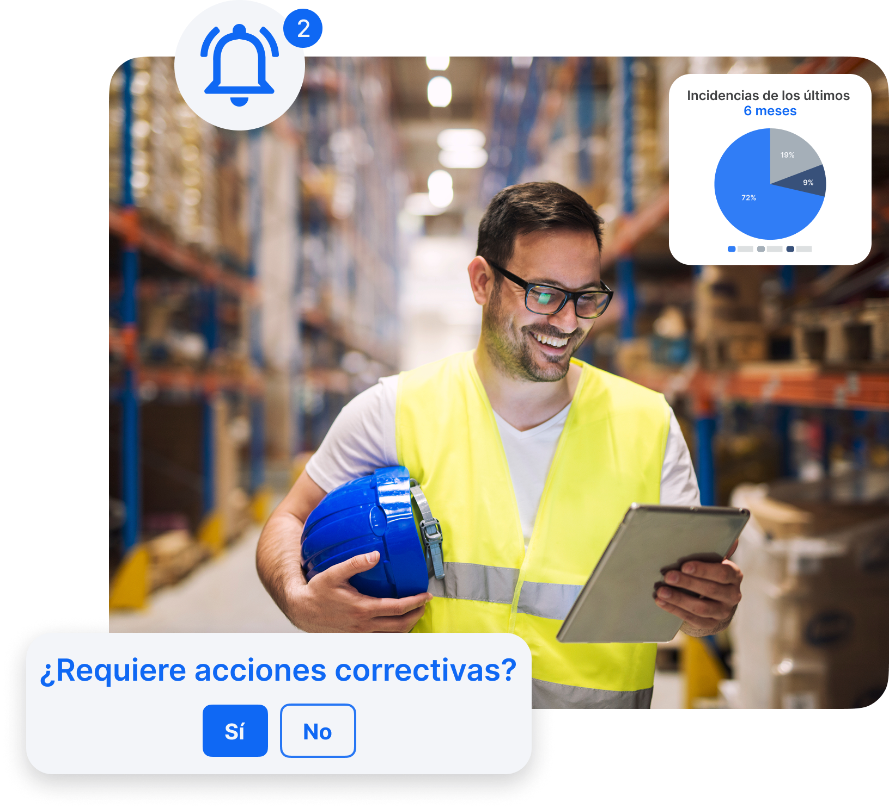
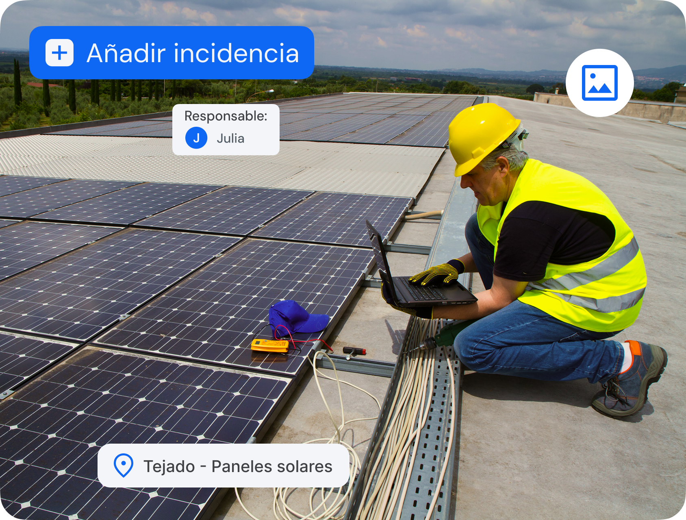

Detecta, registra y soluciona incidencias con la agilidad que tu equipo necesita. Desde el aviso hasta la resolución, todo bajo control.
Descubre cómo funciona
Simplifica el cumplimiento normativo (IFS, BRC, ISO 9001 etc.) con registros digitales siempre disponibles y actualizados en tiempo real.
Descubre cómo han mejorado las métricas de nuestros clientes en el primer año

Desde móvil, tablet o PC, documenta todos los detalles, adjunta fotos o vídeos, asigna responsables y haz seguimiento en tiempo real.
Configura procesos personalizados para que cada incidencia llegue a la persona correcta sin demoras.
No dependas de volver a la oficina, registra, revisa y actualiza incidencias en cualquier momento y lugar.
Consulta gráficos y tendencias de incidencias para detectar puntos críticos y prevenir problemas futuros.
Optimiza la gestión conectando Solved con tus herramientas de producción y mantenimiento.